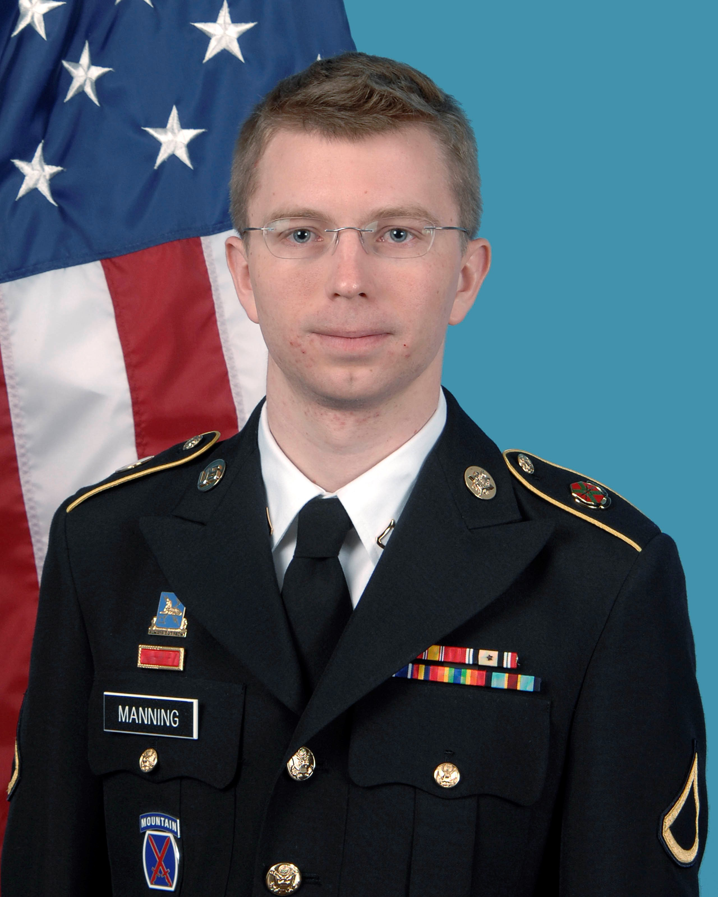

There have been many cases to do with privacy and anonymity throughout the news recently. One major headline has been the acts of Edward Snowden who is an American computer specialist that disclosed thousands of classified documents to media outlets. These included various documents about global surveillance programs suggested by the NSA. His current residence is Russia where he is under asylum. The states have considered him as a fugitive for leaking these documents as he has gone against the states.

Bradley Manning is the actual person who stole thousands of classified documents from US military servers. He leaked these to such sites as WikiLeaks and was supposed to remain anonymous but his identity was leaked. He is now in prison waiting to be court martialled. They are hiding however his right to anonymity was relinquished and he was tracked down. While he may be guilty it is the fact that his statuary right to privacy was abused to convict him.
This brings us onto the case of the NSA which stands for the National Security Agency. They are responsible for the production and management of signals intelligence (SIGINT) and information assurance for the United States government. The controversy surrounding them were that they have done many things to grossly perturb people’s anonymity. Including the phone record from Verizon to steal and catalogue people’s identities and track their calls.